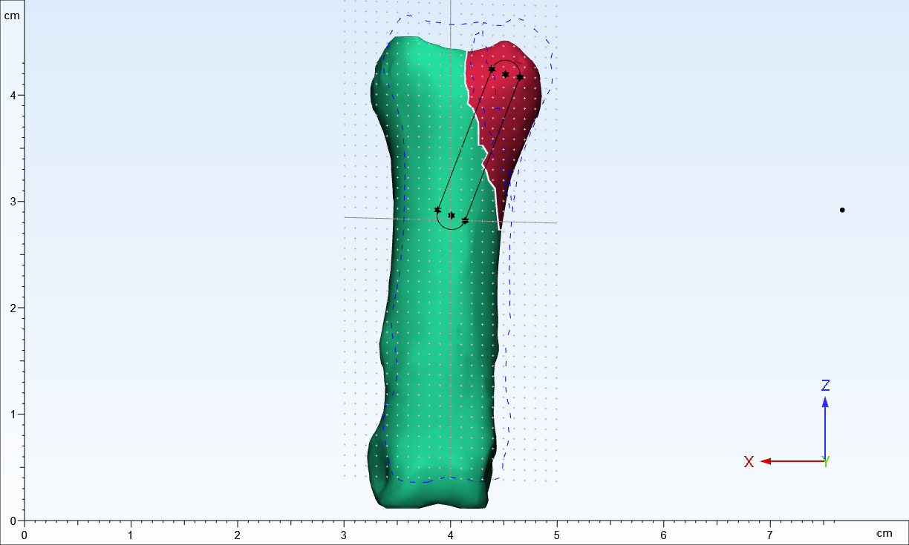
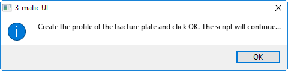
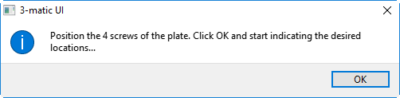
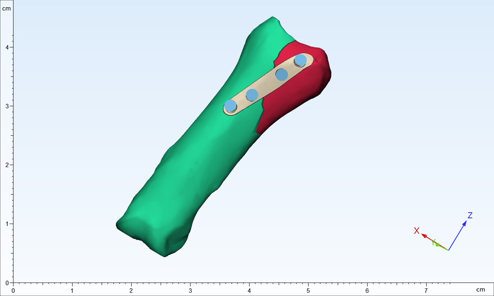

6. Fracture plate¶
This tutorial shows how to semi-automatically design a patient specific finger plate.
The workflow focuses on designing a plate based on the position of screws in 3D.
This tutorial will help in understanding workflows that are part of a design process.
The project hand_plate.mxp is located in the 3-matic installation folder: \..\DemoFiles.
The completed script can be found in the 3-matic installation folder in DemoFiles\scripts\Fracture plate.py. We will describe the different steps in the script in more detail.
The first step is to define the constants and to import the project from the path that is located locally.
import os
import trimatic
from tkinter import *
import numpy
# Constants used for the script
ORIGINAL_FILES = ["screw","fingerbone"]
TEMP = "temp"
WRAPPED_TEMP = "wrapped_temp"
PLATE = "Hand plate"
FINAL_PLATE = "Final Hand plate"
SCREWS = ["Screw 1", "Screw 2", "Screw 3", "Screw 4"]
MESSAGE_1 = "Create the profile of the fracture plate and click OK. The script will continue..."
MESSAGE_2 = "Position the 4 screws of the plate. Click OK and start indicating the desired locations..."
# Open project and select the best view.
application_exe = trimatic.get_application_path()
application_path = os.path.dirname(application_exe)
project_filename = application_path + "/DemoFiles/hand_plate.mxp"
trimatic.open_project(project_filename)
trimatic.view_default(trimatic.DefaultViews.Back)
finger_bone = trimatic.find_part(ORIGINAL_FILES[1])
assert finger_bone
trimatic.zoom(finger_bone)
The following section will describe the pre processing of the finger bone.
# Calculate the center of gravity and inertia axes to ensure that create a plane.
finger_bone = trimatic.find_part(ORIGINAL_FILES[1])
inertia = trimatic.compute_inertia_axes(finger_bone)
finger_bone_zx_pl = trimatic.create_plane_normal_origin(normal=inertia[1],origin=inertia[0])
finger_bone_zx_pl.visible = False
sketch = trimatic.create_sketch(planes=finger_bone_zx_pl)
# Move the plane and the sketch above the bone
assembly = [finger_bone_zx_pl,sketch]
translation_vector = (0,inertia[2][1]+10,0)
trimatic.translate(assembly,translation_vector)
# Importing the references of the surfaces onto the sketch.
for surf in finger_bone.get_surfaces():
trimatic.import_outline(sketch,surf, construction=True)
# UI for the creation of the curve profile.
trimatic.message_box(MESSAGE_1,'Sketch profile',False )
In the first interactive section of the script, we define the outline of the fracture plate that will be exported onto the finger bone. The first step is to draw two parallel lines that will go across the fracture. This is accomplished by using “Sketch -> Add Sketch entity -> Line segment”. The next step is to use “Sketch -> Add Sketch entity -> Circle Arc (3 points)” to create the arcs around the two parallel lines to complete the outline.
It is recommended that a line segment and a circle arc are constrained tangentially to create a fracture plate that is uniform in shape. There will be two pairs of constraints that will be created to create a uniform outline. The last step is to ensure all the line segments and circle arcs are set to have their “Construction Off”. The final outcome should resemble the image below.
{kind=link}
Once the outline is complete and you are satisfied with the result, click the “OK” button on the message box below and the script will continue.
{kind=link}
# Create a temporary part and hide the sketch
finger_bone.visible = False
temp_part = trimatic.copy_to_part(finger_bone.get_surfaces())
temp_part.name = TEMP
temp_part.visible = False
sketch.visible = False
# Wrap the temporary part
wrapped_temp = trimatic.wrap(entities=temp_part,gap_closing_distance=0.4,smallest_detail=0.2)
wrapped_temp.name = WRAPPED_TEMP
#project curve to part and split to surfaces
direc = (0,-translation_vector[1],0)
trimatic.project_curve(entities=sketch,direction=direc,target_entities=wrapped_temp)
trimatic.attach_curve(wrapped_temp.get_curve_sets()[0],wrapped_temp)
trimatic.split_surfaces_by_curves(wrapped_temp,wrapped_temp.get_curve_sets()[0])
# Find and pick the smallest surface which is the plate
surfs = wrapped_temp.get_surfaces()
plate_surf = surfs[0]
if plate_surf.area > surfs[1].area:
plate_surf = surfs[1]
#From surface to Part for the plate
plate_part = trimatic.copy_to_part(plate_surf)
plate_surf = plate_part.get_surfaces()[0]
trimatic.move_surface(plate_surf,direction=None,distance=0.5)
plate_part.name = PLATE
#Delete temp parts
trimatic.delete(temp_part)
finger_bone.visible = True
In the second and final interactive portion of the script, users are instructed to position 4 screws on the plate as can be seen in the second message box below.
{kind=link}
This is accomplished by selecting 4 points that will represent the desired locations of the screws. The points should be selected equidistantly and away from the fracture. The script will resume once the user clicks “OK”, creating the 4 corresponding screws. The result of which can be seen in the image below.
{kind=link}
# UI for the indicating scews
trimatic.message_box(MESSAGE_2,'Indicate screws',False )
points = [trimatic.indicate_coordinate() for i in range(len(SCREWS))]
planes = [0 for i in range(len(points))]
po = 0
for p in points:
duplicatebone = trimatic.duplicate(plate_part)
spherepoint = trimatic.create_sphere_part(p,1)
inters = trimatic.boolean_intersection((duplicatebone,spherepoint))
allsurfaces = inters.find_surfaces('Surface')
areas = [0 for i in range(len(allsurfaces))]
a = 0
for s in allsurfaces:
areas[a] = s.area
a = a+1
ms = numpy.argmax(areas)
planes[po] = trimatic.create_plane_fit(allsurfaces[ms])
# Check necessary whether Z-axis of plane points in right direction
# by comparing direction from point to center of gravity with Z-axis direction
gr = trimatic.compute_center_of_gravity(inters)
sp = numpy.inner(numpy.subtract(p,gr),planes[po].object_coordinate_system.z_axis)
if sp < 0:
trimatic.rotate(planes[po],180,planes[po].object_coordinate_system.origin,planes[po].object_coordinate_system.x_axis)
po = po + 1
trimatic.delete(inters)
# Place screws with plane to plane align
screws = [0 for i in range(len(points))]
screws2 = [0 for i in range(len(points))]
sc = 0
screw = trimatic.find_part(ORIGINAL_FILES[0])
screw.visible = False
for p in points:
xyplanescrew = trimatic.create_plane_normal_origin(screw.object_coordinate_system.z_axis,screw.object_coordinate_system.origin)
duplicatescrew = trimatic.duplicate(screw)
trimatic.plane_to_plane_align(planes[sc],xyplanescrew,duplicatescrew)
screws[sc] = duplicatescrew
screws2[sc] = trimatic.duplicate(screws[sc])
planes[sc].visible = False
screws[sc].visible = False
sc = sc + 1
trimatic.delete(xyplanescrew)
#Move a bit the screws to appear better
for sc in screws:
trvector = sc.object_coordinate_system.z_axis #only 1 mm required
trimatic.translate(sc,trvector)
allscrews = trimatic.boolean_union(screws)
screws_4_subtraction = trimatic.boolean_union(screws2)
The final step of the script is to complete the plate with the screw holes.
#create holes in the plate
final_plate = trimatic.boolean_subtraction(plate_part,screws_4_subtraction)
final_plate.name = FINAL_PLATE
trimatic.resume_progress()